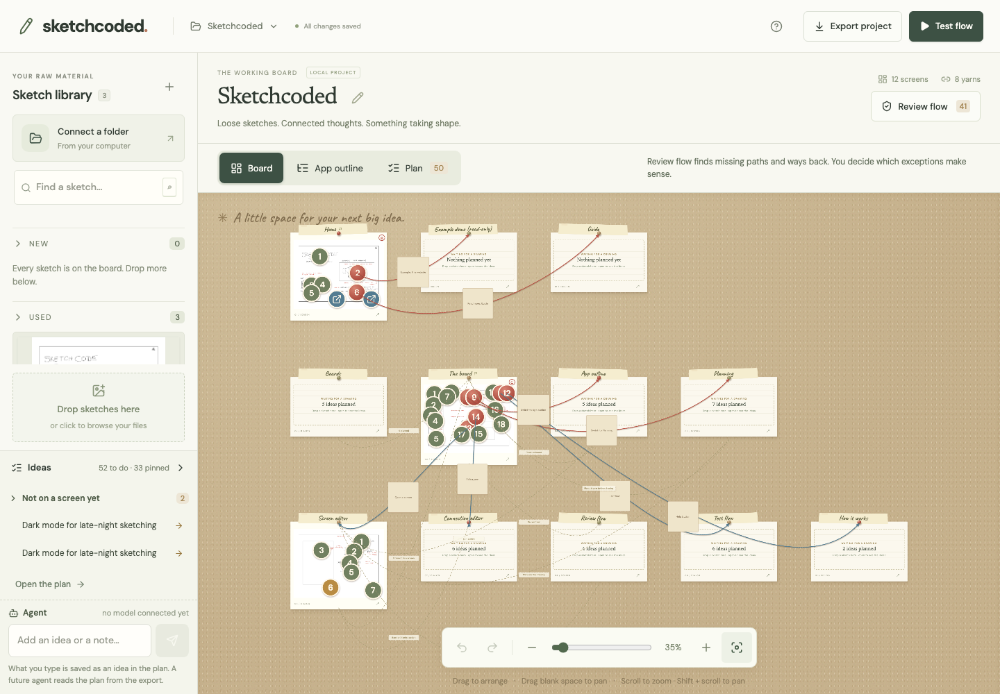

sketchcoded
sketchcodedSketchcoded
Prompts make apps.Sketching makes your vision.
Draw the screens of the app you're imagining. Pin them to a board, tie them together with yarn, and write what each part should do in plain words. Play it, check it, and hand an AI a plan it can build from.

Set up in one paste.
Loading the setup prompt…
Needs Node.js 22.12 or later and a desktop browser. macOS, Windows or Linux.
Your sketches never leave it. There is no account, no API key and no upload. The folder you point Sketchcoded at stays read only.
Read the guide
How a board becomes a plan, what the automatic checks look for, and how to set up from the repository's Markdown files.
GuideLook at the code
A local web app: React and TypeScript in front, a small Node server behind, your files on disk.
GitHubSee more projects
Sketchcoded is one of a family of tools for doing careful work with agents.
Science with agents →